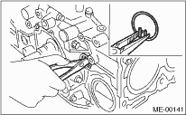

NOTE:
Before conducting this procedure, drain the engine oil completely.
1. Remove the intake manifold. 
2. Remove the V-belts.
3. Remove the crank pulley.
4. Remove the timing belt cover.
5. Remove the timing belt.
6. Remove the cam sprocket.
7. Remove the crank sprocket.
8. Remove the generator and A/C compressor together with their brackets.
9. Remove the rocker cover.
10. Remove the cylinder head bolts in alphabetical sequence shown in the figure.
NOTE:
Leave bolts (a) and (c) engaged by three or four threads to prevent the cylinder head from falling.
|
(A) |
Front side |
11. While tapping the cylinder head with a plastic hammer, separate it from cylinder block.
12. Remove the bolts (a) and (c) to remove cylinder head.
|
(A) |
Front side |
13. Remove the cylinder head gasket.
CAUTION:
Be careful not to scratch the mating surface of the cylinder block and cylinder head.
14. Similarly, remove the right side cylinder head.
15. Remove the clutch housing cover. (MT model)
16. Remove the flywheel (MT model) or drive plate (AT model).
Using the ST, lock the crankshaft.
| ST 498497100 | CRANKSHAFT STOPPER |
• MT model

• AT model
17. Remove the oil separator cover.
18. Remove the water by-pass pipe for heater.
19. Remove the water pump after loosening the bolts in alphabetical sequence as shown in the figure.
20. Remove the bolts which install oil pump onto cylinder block.
NOTE:
When disassembling and checking the oil pump, loosen the relief valve plug before removing the oil pump.

21. Remove the oil pump from cylinder block using a flat tip screwdriver.
CAUTION:
Be careful not to scratch the mating surface of cylinder block and oil pump.

22. Remove the oil pan.
(1) Place the cylinder block to face the #2 and #4 piston side upward.
(2) Remove the bolts which secure oil pan to cylinder block.
(3) Insert an oil pan cutter blade between cylinder block-to-oil pan clearance and remove the oil pan.
CAUTION:
Do not use a screwdriver or similar tools in place of oil pan cutter.
23. Remove the oil strainer stay.
24. Remove the oil strainer.
25. Remove the baffle plate.
26. Remove the oil filter.
27. Remove the water pipe.


|
(1) |
Service hole plug |
(4) |
Piston pin |
(7) |
Seal washer |
|
(2) |
Gasket |
(5) |
Service hole cover |
(8) |
Washer |
|
(3) |
Snap ring |
(6) |
O-ring |
28. Remove the service hole cover and service hole plugs using a hexagon wrench (14 mm).

29. Rotate the crankshaft to bring #1 and #2 pistons to bottom dead center position, then remove the piston snap ring through service hole of #1 and #2 cylinders.

30. Draw out the piston pin from #1 and #2 pistons using ST.
| ST 499097700 | PISTON PIN REMOVER |
NOTE:
Be careful not to confuse the original combination of piston, piston pin and cylinder.

31. Similarly remove the piston pins from #3 and #4 pistons.
32. Remove the bolts which connect cylinder block on the side of #1 and #3 cylinders (RH).
33. Loosen the bolts which connect cylinder block on the side of #2 and #4 cylinders two or three turns.
34. Set up the cylinder block so that #2 and #4 cylinders (LH) are on the upper side, then remove the bolts connecting the cylinder block.
35. Separate the cylinder block (RH) and (LH).
NOTE:
When separating the cylinder block, do not allow the connecting rod to fall or damage the cylinder block.
|
(1) |
Cylinder block |
(4) |
Crankshaft bearing |
(6) |
Seal washer |
|
(2) |
Rear oil seal |
(5) |
Piston |
(7) |
Washer |
|
(3) |
Crankshaft |
36. Remove the rear oil seal.
37. Remove the crankshaft along with the connecting rods.
38. Remove the crankshaft bearings from cylinder block using a hammer handle.
NOTE:
Do not mix the combination of crankshaft bearings. Press the bearing at the end opposite to locking lip.
39. Draw out each piston from cylinder block using wooden bar or hammer handle.
NOTE:
The pistons must be reinstalled respectively in the original cylinders.